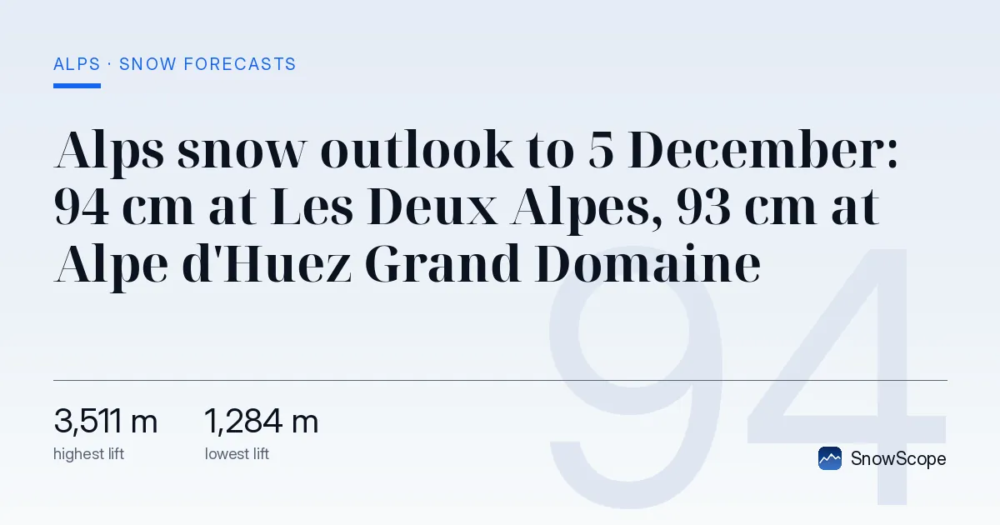

Alps snow outlook to 5 December: 94 cm at Les Deux Alpes, 93 cm at Alpe d'Huez Grand Domaine
Fourteen days of new snow on one map, 22 November to 5 December, for every mountain in the Alps: that is what the two forecasts that reach two weeks, ECMWF and GFS expect, taken at their middle, with the spread between them wherever we quote a number. The most goes to Les Deux Alpes: about 94 cm on its upper slopes, 61 cm–127 cm depending on the forecast, then Alpe d'Huez Grand Domaine with 93 cm. Confidence: good for the trend, lower for any single number.
See the live snow forecast for Les Deux Alpes in the SnowScope appSnow depth, powder alerts and the 3D map, free.
Resort by resort, the next 14 days
Les Deux Alpes (France): about 94 cm in 14 days (61 cm–127 cm between the Forecasts), 76 cm in the first week and 18 cm in the second. Mark 22 November: that is the biggest day, with 47 cm, out of 4 days at 5 cm or more.
Alpe d'Huez Grand Domaine (France): about 93 cm in 14 days (65 cm–121 cm between the Forecasts), 80 cm in the first week and 13 cm in the second. Mark 22 November: that is the biggest day, with 49 cm, out of 4 days at 5 cm or more.
At Orcières Merlette (France) the two weeks add up to about 93 cm (53 cm–134 cm depending on the forecast): 65 cm by the end of the first week, then 28 cm more. The snowiest day is 22 November with 34 cm; 5 days bring 5 cm or more.
At Saint François Longchamp (France) the two weeks add up to about 92 cm (70 cm–114 cm depending on the forecast): 82 cm by the end of the first week, then 10 cm more. Mark 22 November: that is the biggest day, with 52 cm, out of 4 days at 5 cm or more.
At Les 7 Laux (France) the two weeks add up to about 88 cm (61 cm–114 cm depending on the forecast): 76 cm by the end of the first week, then 11 cm more. The snowiest day is 22 November with 46 cm; 4 days bring 5 cm or more.
At Puy-Saint-Vincent (France) the two weeks add up to about 87 cm (51 cm–122 cm depending on the forecast): 62 cm by the end of the first week, then 25 cm more. Mark 22 November: that is the biggest day, with 34 cm, out of 4 days at 5 cm or more.
| Resort | Snow depth | New snow, 72 h | Coming, next days | Top |
|---|---|---|---|---|
| Les Deux Alpes | 102 cm | 64 cm | 72 cm | 3,511 m |
| Alpe d'Huez Grand Domaine | 92 cm | 84 cm | 89 cm | 3,306 m |
| Orcières Merlette | 50 cm | 44 cm | 48 cm | 2,731 m |
| Saint François Longchamp | 59 cm | 93 cm | 89 cm | 2,516 m |
| Les 7 Laux | 35 cm | 62 cm | 64 cm | 2,372 m |
| Puy-Saint-Vincent | 36 cm | 39 cm | 46 cm | 2,664 m |

Against past winters
At about 2,398 m, Les Deux Alpes has 34 cm today; a normal 21 November has 28 cm there.
Only one winter in ten has more than 70 cm on this date.
A week ago the same spot had 4 cm.
In past winters the best snow at Les Deux Alpes usually came early March / early April.

First week against second week
Split by week, the first one (22 November to 28 November) carries 73 % of the two weeks' snow across the region; the second (29 November to 5 December) carries the rest.
Front-loaded: Les Deux Alpes, Alpe d'Huez Grand Domaine, Orcières Merlette, Saint François Longchamp, Les 7 Laux and Puy-Saint-Vincent get most of their snow in the first week.
On the map, about 112,241 km² of mountain terrain get 20 cm or more over the two weeks, and 19,093 km² get 50 cm or more.

New snow by height
What the altitude does to these totals, read over the whole range rather than at the lifts: between 1,000 m and 1,500 m: typically 22 cm, the snowiest quarter of that band 32 cm or more; between 1,500 m and 2,000 m: typically 32 cm, the snowiest quarter of that band 46 cm or more; between 2,000 m and 2,500 m: typically 34 cm, the snowiest quarter of that band 52 cm or more; between 2,500 m and 3,000 m: typically 37 cm, the snowiest quarter of that band 52 cm or more; between 3,000 m and 4,500 m: typically 43 cm, the snowiest quarter of that band 54 cm or more.
The days to watch
The days to circle, counted over the 1186 resorts we follow in the Alps: Sunday 22 November (813 of 1186 resorts at 5 cm or more, up to 52 cm at Saint François Longchamp), Monday 23 November (549 of 1186 resorts at 5 cm or more, up to 17 cm at Engelberg Titlis), Wednesday 25 November (372 of 1186 resorts at 5 cm or more, up to 31 cm at Corno alle Scale) and Thursday 26 November (371 of 1186 resorts at 5 cm or more, up to 23 cm at Soriška planina).
How to read the maps
Reading guide: the first map is the fortnight in one picture, the other two take it week by week. Where the terrain stays grey, less than a centimetre is expected; the darker the colour, the more snow. Pins show the resorts of this post at slope height.
Keep the far end of these maps loose. We update every morning, so the picture sharpens day by day.
Tips for skiers
- If a resort you care about sits between two colours on the map, read its pin: the pins are computed on its slopes, not on the village.
- The 0 °C level is a forecast and can move by several hundred metres, which changes where rain turns to snow: check the map again the day before you go.
- Before any off-piste or touring day, read the official avalanche bulletin (links below).
- Snow on the map does not mean a resort is open: check lifts and dates on the resort's website.
About these numbers
Resort snow depths are the deepest snow on the resort's upper slopes on the date shown; they are estimates for an area, not a measurement at one point. Forecasts can change. Always read the official avalanche bulletin before going off-piste.
Official avalanche bulletins: EAWS (Alps)
Cite this report
For research, teaching or the press: the numbers and charts are free to reuse under CC BY 4.0 with this citation.
SnowScope (2026), Alps snow outlook to 5 December: 94 cm at Les Deux Alpes, 93 cm at Alpe d'Huez Grand Domaine, https://snowscope.app/blog/en/2026/11/alps-2-week-snow-forecast-maps-21-november-2026.html, accessed 2026-11-21
SnowScope (Atlas Labs). (2026, November 21). Alps snow outlook to 5 December: 94 cm at Les Deux Alpes, 93 cm at Alpe d'Huez Grand Domaine. SnowScope snow reports. https://snowscope.app/blog/en/2026/11/alps-2-week-snow-forecast-maps-21-november-2026.html
BibTeX
@misc{snowscope2026alps2weeksnowforecastmap,
author = {{SnowScope (Atlas Labs)}},
title = {Alps snow outlook to 5 December: 94 cm at Les Deux Alpes, 93 cm at Alpe d'Huez Grand Domaine},
year = {2026},
month = nov,
howpublished = {\url{https://snowscope.app/blog/en/2026/11/alps-2-week-snow-forecast-maps-21-november-2026.html}},
note = {Published 2026-11-21 12:14 UTC; accessed 2026-11-21}
}· CC BY 4.0 · Methods, data and tools →
Les Deux Alpes: snow and temperature by height, this winter vs last (tools) →
Follow Les Deux Alpes
Free: a message when fresh snow is coming, and the forecast every morning.
More snow reports

Puy-Saint-Vincent pairs a 44 EUR adult 1-day pass with solid December snow higher up, compared here with its big neighbour Serre Chevalier.

Orcières Merlette offers a high base at 1826 m and a 6-day pass from 227 EUR, making it a reliable choice for a December ski trip.

Les 2 Alpes reaches 3511 m for high snow in December 2026, with an adult 6-day pass priced at 266.50 EUR.